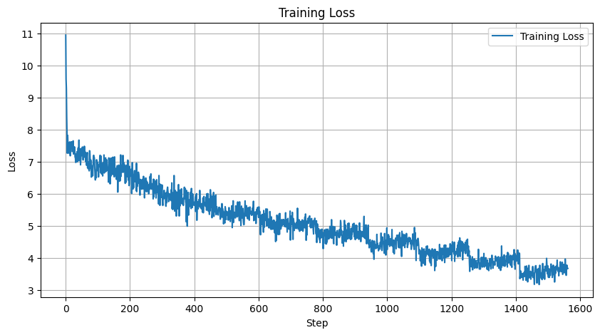
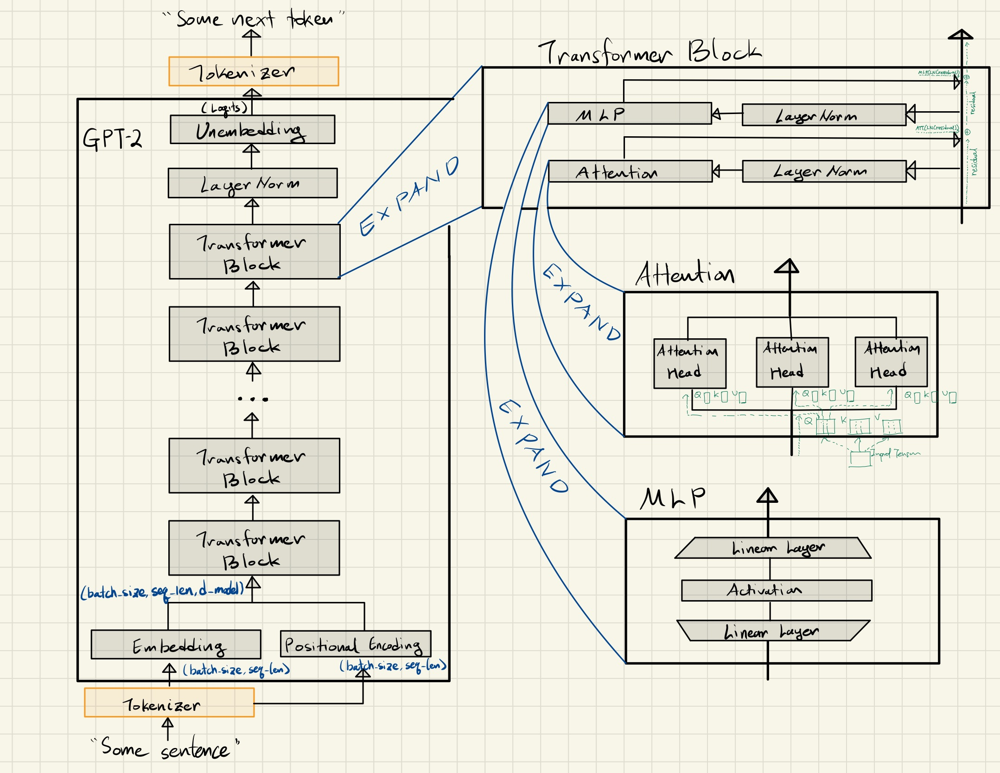

I tried implementing a GPT style language model from scratch as a part of the ML Alignment & Theory Scholars (MATS) program. In this Colab notebook, I try to build a autoregressive language model like GPT-2. The goal here is to break down the abstraction layers typically found in many frameworks to follow each critical step without needing to rely on external references. Each code block stands on its own, with explanations for better intuition behind key matrix operations. I've also included other clean transformer implementations for comparison, though they differ slightly in approach—my version, for instance, uses absolute positional embeddings.
My clean transformer implementation 👉 here.
Neel Nanda's clean transformer implementation 👉 here.
Callum McDougall's (ARENA) clean transfomer implementation 👉 here.
👇 I tried pre-training my implementation of GPT-2 but it seems that it says gibberish. The loss is decreasing though.

👇 Architecture diagram for future reference.

Some conventional notations for TransformerLens:
- Embedding: W_E
- Positional Embedding: W_pos
- Query: W_Q
- Key: W_K
- Value: W_V
- Attention Output: W_O
- MLP Input: W_in
- MLP Gate: W_gate
- MLP Output: W_out
- Unembedding: W_U
Some additional notes on attention:
Attention is a key mechanism in transformer models, designed to allow words to update their meanings based on context. Initially, words are represented as high-dimensional vectors called embeddings (see the diagram above 👆). These embeddings only encode the meaning of individual words, but the goal of attention is to refine them to incorporate contextual information.
The attention mechanism revolves around three main components: query, key, and value matrices. These are learnable parameters that transform the initial embeddings. Conceptually (though not always empirically), the query matrix produces "questions" for each word, while the key matrix generates potential "answers." The interaction between these queries and keys forms the basis of determining which words are relevant to updating the meaning of others.
Consider the sentence "The ancient oak tree provided cool shade on the hot summer day." The query matrix might transform the embedding of "tree" into a vector that asks, "What are my defining characteristics?" Meanwhile, the key matrix might transform the embeddings of other words into vectors that potentially answer this query. To determine the relevance of each word to "tree," the model computes the dot product between the query vector for "tree" and the key vectors for all other words. This calculation results in a grid of attention scores.
For instance, the score between "ancient" and "tree" would likely be high, as would the score between "oak" and "tree," indicating strong relationships. Conversely, the scores between "tree" and words like "hot" or "summer" would likely be lower, as they're less directly related to the tree's characteristics. These scores are then normalized using a softmax function, converting them into weights between 0 and 1, creating the attention pattern. In this pattern, "ancient" and "oak" would have high weights with respect to "tree," allowing the model to update the embedding of "tree" to reflect that it's specifically an old oak tree. Meanwhile, words like "hot" and "summer" would have lower weights, contributing less to the updated meaning of "tree."
The value matrix comes into play for actually updating the embeddings. Unlike the query and key matrices, which are used to compute relevance, the value matrix transforms the original embeddings into "value vectors" that contain the actual information used for updates. This transformation serves several purposes: it allows the model to learn what information is most useful for updates, provides more flexibility in representing information, and can help manage computational complexity by potentially reducing dimensionality. Instead of directly using the original embeddings, which contain a lot of information that may not all be relevant for updates, the value vectors focus on the most important aspects for updating word meanings in context.
To update a given word's embedding (like "tree"), the model uses the weights from the attention pattern to compute a weighted sum of all value vectors. This process works as follows: First, we have value vectors for all words in the sentence. We also have attention weights showing how relevant each word is to "tree". The model then multiplies each value vector by its corresponding attention weight and sums up all these weighted value vectors. For instance, the value vectors of "ancient" and "oak" would contribute more heavily to updating "tree" due to their higher attention weights, while "hot" and "summer" would contribute less. This weighted sum represents the contextual information to be added to the original embedding of "tree", resulting in a new, context-aware embedding that reflects its specific characteristics in this sentence. This process is repeated for every word, allowing each to be updated based on its relevant context as determined by the attention pattern, using these specially computed value vectors instead of directly using other words' embeddings.
Another important aspect of attention in language models is masking. During training, the model needs to predict the next word based only on previous words. To prevent future words from influencing earlier ones, the attention mechanism applies a mask that effectively sets the relevance of future words to zero.
What I explained so far happened in a single attention head. Instead of performing a single attention operation, transformer models typically run multiple attention heads in parallel. Each head has its own set of query, key, and value matrices, allowing the model to capture different types of relationships between words simultaneously. The attention mechanism is applied iteratively in transformer models. Embeddings go through multiple attention blocks, each time becoming more refined and context-aware. This allows the model to capture increasingly complex and abstract relationships within the text.
(Recommend) 3Blue1Brown's intuition behind attention 👉 here.